* Authors have equal contributions and are just sorted in alphabetical order.
Abstract
Unsplash Semantic API (USe) is a Web application based on the Semantic Web principles. Following these
concepts, it makes use of a knowledge graph built from various datasets and conceptual models. This
document describes technical aspects concerning the implementation, technologies, usability, the
knowledge modeling, the data sources, and other important aspects related to the development of the
proposed solution.
Introduction
USe stands for Unsplash Semantic API, and it's a Web application following the
Semantic Web principles, developed as part of the Web Application Development1 course.
Goals and Requirements
The project aims to allow users to perform various tasks such as:
Visualize - images as the result of searching or using predefined collections. Individual
images have associated a collection of properties which give additional (meta-)informations,
enriching the knowledge about a photograph.
Augment - both visually, using parameters like brightness, contrast, blur, etc., and
semantically, with additional metadata about concepts related to a photo retrieved from external
datasets like DBpedia2 and/or Wikidata3.
Filter and Search - on various criterias such as photo id, keywords, photo location
country or city, photographer firstname or lastname, camera maker, etc. which provide users the
ability to quickly find and explore photos that users may find of interest.
Compare - two or more photos, side by side, highlighting the differences between most of
their properties, in order to enable users to easily study and find differences.
Some of the most important requirements for the developed project are:
The application developed to be a multi-device Web application, accessible to users on both
desktop and mobile platforms.
To follow the Linked Data recommended practices for publishing structured data on the Web, in
order for the data to be processable by Semantic Web tools.
To use a knowledge graph/base and provide a SPARQL endpoint. The project is using data stored in
an RDF triple store using a set of frameworks (described in technologies section) and is
providing an endpoint at which other SPARQL clients can make queries and manipulate data.
The knowledge modeling to be about nature-themed photos provided for free by the Unsplash Lite
Dataset4.
To use various conceptual models such as schema.org5 or Getty Thesaurus of Geographic Names6, in addition to the knowledge about
photography, natural beauties, geography, etc. from external data sources.
Implementation
The Web Application was developed according to the actual practices in Web engineering (e.g.,
documentation, modularity, service oriented architecture, etc.) by using modern approaches.
For the source-code management, the GitHub cloud-based solution was be used.
Being a complex application, the project makes use of a variety of programming languages and
frameworks in order to deliver comprehensive functionality.
Front-End
For the Front-End of the application, some of the used technologies are:
Angular - open-source, JavaScript framework written in
TypeScript. A development platform and a component-based framework for building scalable web
applications. It enables users to create large applications in a maintainable manner.
Angular Material - a User Interface (UI)
component library that can be use in the Angular projects to speed up the development of elegant
and consistent user interfaces. Offers many internationalized and accessible components that
integrated seamlessly with Angular.
Bootstrap - a popular CSS Framework for
developing responsive and mobile-first websites. It is a powerful, feature-packed frontend
toolkit which includes production-ready CSS and JavaScript.
Back-End
Technologies on the Back-End are mostly oriented around the Java programming language:
Spring Boot - development platform,
based on Spring platform and third-party libraries, for creating stand-alone, production-grade
applications. It allowed us to develop in a standardised manner the REST API that provides most
of the Back-End functionality.
Apache Jena RDF API -
Provides core API to create and read Resource Description Framework (RDF)7 graphs. It allowed us to create RDF models using
the data parsed from the Unsplash Lite Datasets, to define triples, nodes, resources, literals,
blank nodes, collections, properties, namespaces, etc. and to output the models in both XML and
TTL format.
Apache TDB -
a high performance component of Jena for RDF storage and query. It is implicitly used by Apache
Fuseki to create persistent and in memory stores for the graphs used in the SPARQL operations.
Apache Jena Fuseki
- a SPARQL server, tightly integrated with TDB to provide a robust, transactional persistent
storage layer. Offers an easy to use interface and endpoints to load, query and manipulate the
existing graphs. The cloud deployed version of the proposed application uses it in the embedded
form.
Application Architecture
The application proposed aims to be a service-based Web application developed using existing Semantic Web
technologies. The application separates the Front-End and Back-end responsibilities in different
projects and modules, according to the best practices, resulting in low coupling and high cohesion.
The Front-End Architecture
The Front-End application was developed using the Angular framework, with the addition of Angular
Material Design integrable components and additional styling using Bootstrap 5. The Front-End
application aims to offer an attractive and easy to use interface for the users in order to access
the functionality of the backend in an intuitive manner.
Some of the main goals would be to provide the functionality to visualize, augment, filter and
compare photos and collection to the user throught their web browser.
The application is a Single-Page Application8
organised in a set of pages with well defined functionality:
Home page serves as an entry point for the users, and provides a summary of the
functionalities of the application.
Search and Filter page provides the users with various controls to search photos, for
example by description or keywords, or to filter them by criterias like photographer, country,
city, camera make, etc. The page also displays the results in a grid-like manner and allow
users to click them, and go to their individual page.
Individual Photo page Allows the user to view the image with a larger size, to see it's
description, source Unsplash URL, data about it's original pixels size, submission date,
location name and GPS coordinates, etc. This page is also augmented with data from external
datastores like DBpedia or Wikidata about concepts like the photo location country, city, about
the place, etc.
Compare Photos page allows users to compare two or more photos, side by side, and
highlights the differences between the properties of the images. This enables users to easily
study and find differences between photos of interest.
The Back-End Architecture
The back-end project aims to be service-oriented, organised in various services and modules that have
well defined boundaries and functionality, enabling high cohesion and low coupling, allowing us
to reuse components as needed, without duplicating code, while maintaining an easy-to-upgrade
code-base.
A high level depiction of the architecture of the proposed solution, using the C4 Model9 Level 2 - Container diagram that zooms into the
software system and shows the high-level technical building blocks is presented below:
C4 Model - Level 2 Container Diagram
From the application architecture diagram it can be seen how different services and modules provide
focused functionalities and are composed to provide aggregated services and results.
Internal software systems
The internal USe System is composed of the following:
API Application is a REST Web API which provides functionality to the Front-End
project via REST endpoints, in order to make queries, search and filter photos, retrieve
images metadata, additional properties, retrieve collections, etc.
Photos Service system is responsible to provides the functionality to visualize,
augment, filter and compare photos. It communicates with external sistems like Unsplash
System to augment them using developer APIs. Images data is retrieved from the local
triples store, and can also be augmented with more data retrieved by using the Wikidata and
DBpedia systems.
Collection Service system allows retrieving predefined collections of photos on
different themes, filters and search criterias for quick access and exploring.
Data Manipulation Service system provides the functionality for inserting additional
data into the different datasets from the local datastore, based on a SPARQL endpoint and
using parseable RDF/CSV/TSV data files.
External software systems
The external sistems that the USe system is making use of are:
Unsplash System which is used for access to the images, and for the developer APIs
that provide options to visually augment images.
Wikidata System open knowledge base with structured data, accessed for additional
knowledge about photography, geographical places, etc.
DBpedia System which provides structured content from the information of various
Wikimedia projects, also used to augment the knowledge about photography and natural
landmarks.
Data Sources
The proposed project relies on both constructing an internal knowledge dataset, starting from the
Unsplash Lite dataset4, and on using external
knowledge datasets like Wikidata or DBpedia.
Below are presented the sources of data for the application and different important related aspects. The
knowledge modeling specific to our application using various vocabularies and schemas is presented in
the next main section.
Unsplash Lite Dataset
The primary source of data for the project is The
Unsplash Dataset, more specifically, the Lite Dataset version, which is available
for commercial and noncommercial usage, and contains 25k nature-themed Unsplash photos, 25k
keywords, and 1M searches.
The Unsplash Dataset is composed of multiple TSV files:
photos.tsv
The photos.tsv dataset contains one row of properties for each photo. Some of the
most important properties used are:
Field
Description
photo_id
ID of the Unsplash photo
photo_image_url
URL of the image file.
photo_submitted_at
Timestamp of when the photo was submitted to Unsplash
photo_width
Width of the photo in pixels
photo_height
Height of the photo in pixels
photo_description
Description of the photo written by the photographer
photographer_username
Username of the photographer on Unsplash
photographer_first_name
First name of the photographer
photographer_last_name
Last name of the photographer
exif_camera_make
Camera make (brand) extracted from the EXIF data
exif_camera_model
Camera model extracted from the EXIF data
exif_iso
ISO setting of the camera, extracted from the EXIF data
exif_aperture_value
Aperture setting of the camera, extracted from the EXIF data
exif_focal_length
Focal length setting of the camera, extracted from the EXIF data
exif_exposure_time
Exposure time setting of the camera, extracted from the EXIF data
photo_location_name
Location of the photo
photo_location_latitude
Latitude of the photo
photo_location_longitude
Longitude of the photo
photo_location_country
Country where the photo was made
photo_location_city
City where the photo was made
stats_views
Total # of times that a photo has been viewed on the Unsplash platform
stats_downloads
Total # of times that a photo has been downloaded via the Unsplash platform
keywords.tsv
The keywords.tsv dataset contains one row per photo-keyword pair with data about how
a keyword is connected to a photo. Some of the most important properties used are:
Field
Description
photo_id
ID of the Unsplash photo
keyword
Keyword or search term
ai_service_1_confidence
Confidence for the keyword from a 3rd party AI (0-100)
ai_service_2_confidence
Confidence for the keyword from another 3rd party AI (0-100)
suggested_by_user
Whether the keyword was added by a user (human)
For example, we attach keywords to the photo entities only if they were suggested by the user or
have either AI confidence above 50%.
collections.tsv
The collections.tsv has data for linking each photo to users' created collections of
photos. Some of the most important properties used are:
Field
Description
photo_id
ID of the Unsplash photo
collection_id
ID of the Unsplash collection containing the photo
collection_title
Title of the collection containing the photo
other .tsv files
The other .tsv files are currently of no interest, but depending on the evolution of the project,
they could be used for advanced semantic inferences or machine learning techniques:
conversions.tsv has data that links each download of a photo to the search
keywords, the timestamp, anonymouse user identifier, country, etc.
colors.tsv has data about which colors are contained within a photo, their
coverage as a percentage, a score for how in focus the colors are, etc.
Dataset Processing Flow
In order to make use of the Unsplash Lite Dataset, the data from the .tsv files has to
be parsed and converted into RDF triples using various schemas and vocabularies, described in the
next chapter. The figure below depicts the flow of the serialization process.
Dataset Processing Flow Diagram
In the figure, it can be seen how the Data Manipulation Service, detailed in the Architecture
chapter, can be used to process input files like photos.tsv and
keywords.tsv, and serializes them into RDF triples (the figure uses "pseudo-rdf"
language just for illustrative purposes) using a set of defined schemas from well known
vocabularies, and then store them into an RDF triple store locally or in the cloud, that is also
being used by the Back-End application, which serves query requests to the Front-End application.
External Data Sources
In addition to the dataset provided by Unsplash, that is processed and persisted in the local
triplestore, the knowledge dataset created can be further augmented with additional data from
external datasets like Wikidata and DBpedia.
Wikidata is an open knowledge
base with a large collection of structured data, that can be read by machines, and provides support
for Wikimedia projects like Wikipedia and Wikimedia Commons. It is free, open, and provides a SPARQL
enpoint which our application can use to retrieve items of interest related to photos location,
city, country, significant keywords, and other various concepts.
DBpedia is another project of interest, that leverages
a source of knowledge by extracting structured information from Wikipedia and by making this
multilingual knowledge information freely accessible on the Web using Semantic Web and Linked Data
technologies.
An example of a SPARQL query against DBpedia SPARQL endpoint
that can be used to get additional information about a city and augment informations about the
location of a photo is the following:
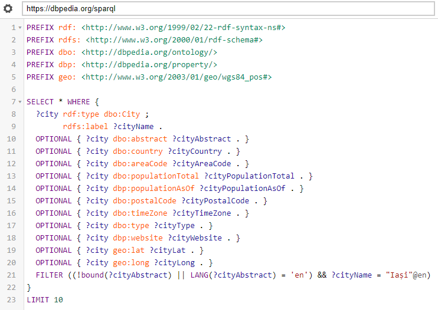
Example of a SPARQL query for getting additional informations about a city
And the result for the city query is depicted below:
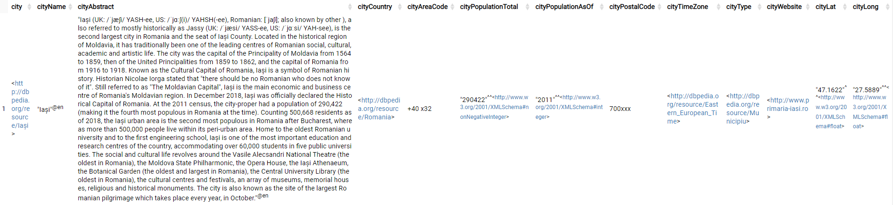
Example of result for the city SPARQL query
Similarly, an example of a SPARQL query that can be used to get additional information about a
country and augment informations about the location of a photo is the following:
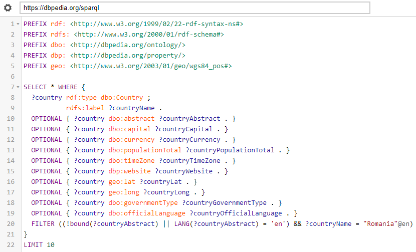
Example of a SPARQL query for getting additional informations about a country
And the result for the country query is depicted below:
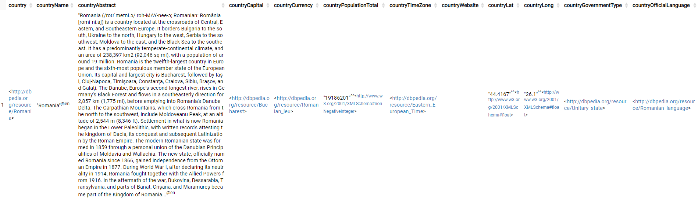
Example of result for the country SPARQL query
Knowledge Modeling
All the data managed by the developed Web application is modeled into RDF-based knowledge models, using
well-known vocabularies and simple ontologies. Modeling data this way allows us to perform various
integrations with other datasets, to perform queries using the SPARQL query language, and to make
advanced inferences using the local and external datasets.
The proposed Web Application uses RDF schemas to define the entities and how they relate semantically to
each other. The entities are stored in different graphs, in the repository managed by Apache TDB.
Each graph has associated an ontology that models the semantic representations of the objects used, and
are structured as follows.
Vocabularies
The following vocabularies were used for modeling the data in RDF triples, for building the
ontologies used by the application, and for linking the resources with external data:
Vocabularies and their prefixes used to model the ontologies
VOWL Ontology Representation
In the following can be found the VOWL: Visual Notation for OWL Ontologies10 representation of the ontology used by our
application. OWL (Web Ontology Language) representation facilitates software interpretation of
content provided by resources available on the Web. More particularly, VOWL was used, which defines
a visual language for the user-oriented representation of ontologies and provides graphical
depictions for elements of the Web Ontology Language that are combined to a force-directed graph
layout visualizing the ontology.
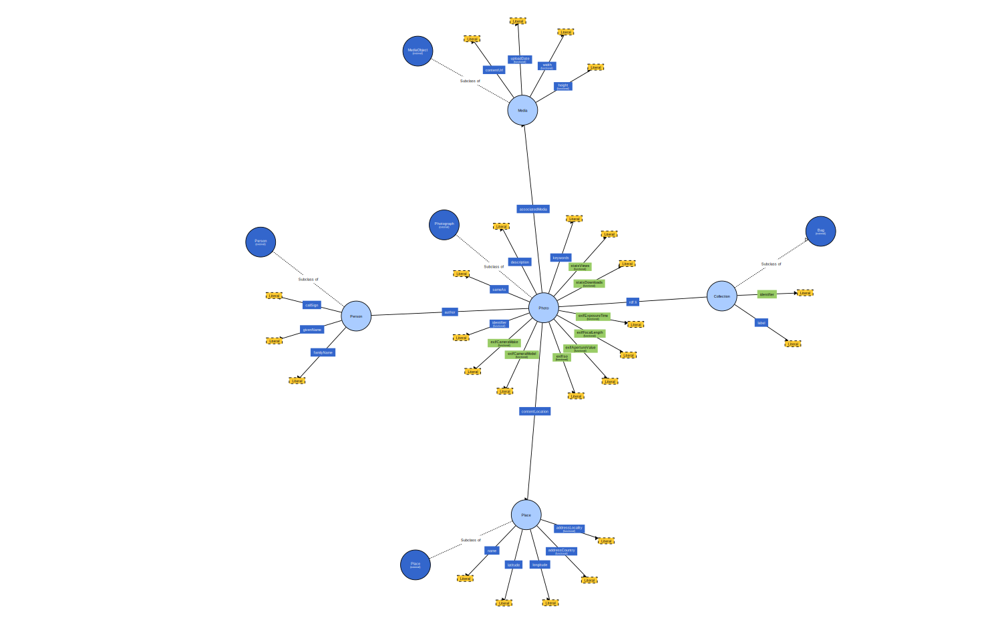
VOWL Representation of the USe Ontology
Photos - Ontology and Graph
The Photo conceptual model is built using multiple schema.org
schemes, that are combined for representing the photo nodes for the application:
And also using properties from the custom defined use vocabulary.
The following diagram represents the complete Photo concept modeling, done using various schemes,
properties, data types, etc. used by the application:
Photo - Conceptual Model
The core photo properties
The ontology used is built around the schema.org/Photograph type that defines multiple
properties of interest. Besides these, a variety of other schemes (listed previously) have been
used to model the properties from the dataset we have available, including the custom defined
use vocabulary.
Photo - Core properties
Some of the properties used are:
schema:identifier Uniquely identifies a photo using a short string ID.
schema:sameAs Has as object a permalink URL to the photo page on unsplash.com
schema:description Contains a description of the photo.
schema:keywords Represents keywords connected to the photo.
use:statsViews Represents number of times that a photo has been downloaded via the
Unsplash platform.
use:statsDownloads Represents number of times that a photo has been viewed on the
Unsplash platform.
use:exifCameraMake Represents camera make (brand).
use:exifCameraModel Represents camera model.
use:exifIso Represents ISO setting of the camera.
use:exifApertureValue Represents aperture setting of the camera.
use:exifFocalLength Represents focal length setting of the camera.
use:exifExposureTime Represents exposure time setting of the camera.
schema:associatedMedia property links a blank node that contains information about
the media properties of a photograph.
schema:contentLocation links a blank node that contains info about the location of
the content depicted in the photograph.
schema:author links a blank node that contains informations about the
author of the photo.
The Media properties
The Media Object blank node is based on the schema.org/MediaObject and contains different
properties that give additional information about the photo from a media content point of view.
Photo - Media properties
Some of the properties used are:
schema:contentUrl URL of the image file.
schema:uploadDate Timestamp of when the photo was submitted to Unsplash.
schema:width Width of the photo in pixels.
schema:height Height of the photo in pixels.
The Place properties
The Place blank node is based on the schema.org/Place and
contains different properties that give additional information about the location of the content
from a photo.
Photo - Place properties
In the following are some details about the properties used:
schema:name Name of the location from the photo.
schema:latitude Latitude of the location from the photo.
schema:longitude Longitude of the location from the photo.
schema:addressCountry The country where the photo was made.
schema:addressLocality The city where the photo was made.
The Author properties
The Author blank node is based on the schema.org/Author
and contains different properties that give additional information about the author of a photo.
Photo - Author properties
Details about the properties used are:
schema:callSign Username of the photographer on Unsplash.
schema:givenName First name of the photographer.
schema:familyName Last name of the photographer.
Collection - Ontology and Graph
The Collection conceptual model is used for representing the photographs collection nodes for the
application. It makes use of properties defined in the schema, rdf, rdfs and
our use vocabularies.
The following diagram represents the complete Collection concept modeling, done using various
schemes, properties, data types, etc.:
Collection - Conceptual Model
The collection model is built around the rdf-schema/#ch_bag type that indicates a
container that is intended to be unordered. In our case, it represents a collection of photos that
build up a user defined collection of photos.
Some of the properties used are:
schema:identifier Uniquely identifies a collection using a short string ID.
rdfs:label Represents the title of the collection containing the photo.
rdf:li Container membership property that indicates which photos are part of the
collection.
RDFa Usage
Our application contains embedded RDFa constructs, which is another way of serializing the RDF model
into structured data and including it in the HTML documents. This also facilitates software
interpretation of content provided by resources available on the Web by programs.
The following figure represents the output of OpenLink
Structured Data Sniffer browser extension on the page of a photo from our application:
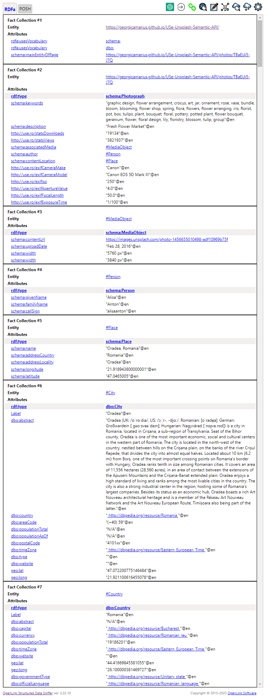
Example of OpenLink Structured Data Sniffer result for a photo page
Accessing Data using SPARQL
All the data managed by the application is modeled into RDF-based knowledge models.This allows the
application to perform queries using the SPARQL language and to make advanced inferences.
Retrieving and Searching Photos
The following represents a SPARQL query that can be used to retrieve photos and their properties.
There is also support for pagination, using OFFSET and LIMIT keywords.
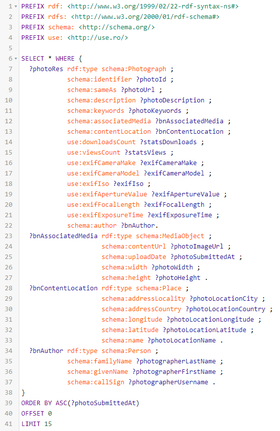
Example of a SPARQL query for retrieving photos
Photos can be searched by various criterias, by augmenting the previous query with
FILTER statements, for example by id, photo location country and city, camera
properties like maker, photographer name, keywords, etc.
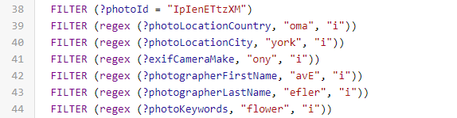
Example of filters that can be applied to the SPARQL query for retrieving photos
Retrieving and Searching Collections
Collections can be retrieved using the following SPARQL query:
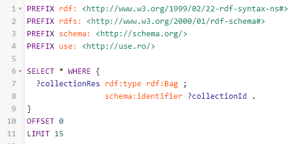
Example of a SPARQL query for retrieving collections
Collections can also be filtered by id using a SPARQL query like the following:
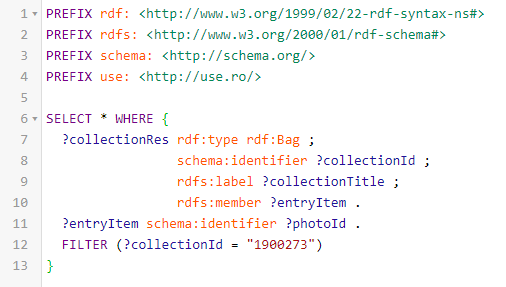
Example of SPARQL query for getting a collection by id
They can also be searched by title using a similar SPARQL query:
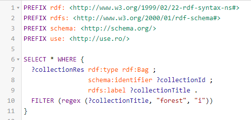
Example of SPARQL query for searching collections by title
Linked Data Principles
Linked Data is a paradigm for publishing data on the Web which uses existing Web technologies,
having as main goals:
Reducing redundancy on the Web
Reutilization
Discovering links and (meta-)data of interest
Interconnecting things (concepts) of interest
Using a pragmatic approach to all of these
There are 4 main Linked Data Principles, that the application proposed respects:
Identification
Using URIs (Uniform Resource Identifiers) to denote "things".
The proposed application respects this principle by giving resources like images unique
URIs that act as unique identifiers in the global graph of inter-connected web resources,
facilitating unambiguous identification of the resources.
Access
The use of HTTP URLs that can be looked up by humans and machines.
The application makes use of URLs for resources like images that leads to their page on
Unsplash. Users and software components can use these to further locate resources of
interest.
Representation
Provide informations using standardised Semantic Web formats such as RDF.
The application uses RDF standardised formats for representing (meta-)information about
things of interest, which are both Human and Machine readable.
Linking
Inclusion in the RDF representations of links to other URIs.
Because in the data representations are included links to other resources from Unsplash,
this creates a network effect by following links, and facilitates discovery and further
access to even more data of interest.
By following all these principles, the application actually follows the 5-⭐ data ranking:
✔️ ⭐ The data is made available on the Web, regardless of format, under an open licence.
✔️ ⭐⭐ The data is made available as structured data.
✔️ ⭐⭐⭐ Uses non-proprietary formats for the data - RDF.
✔️ ⭐⭐⭐⭐ The resources have associated URLs that can be referenced by others resources.
✔️ ⭐⭐⭐⭐⭐ The resources make use of URLs to link to other data (e.g. source photographs from
Unsplash).
Authors
The authors have the same contribution to the developed solution. In alphabetical order, they are: